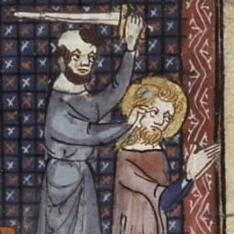

St. Marcellinus
St. Marcellinus (296-304) began to rule just before the outbreak of the persecution under Diocletian. A hundred years after his death, a Donatist bishop in Africa affirmed that Marcellinus had denied the faith; but the truth of this report was questioned by St. Augustine. There remains however, a probability that during the persecution he did not behave with sufficient bravery to win the respect of the faithful.
McSorley, Joseph. An Outline History of the Church by Centuries (from St. Peter to Pius XII). 2nd Ed. 1944.